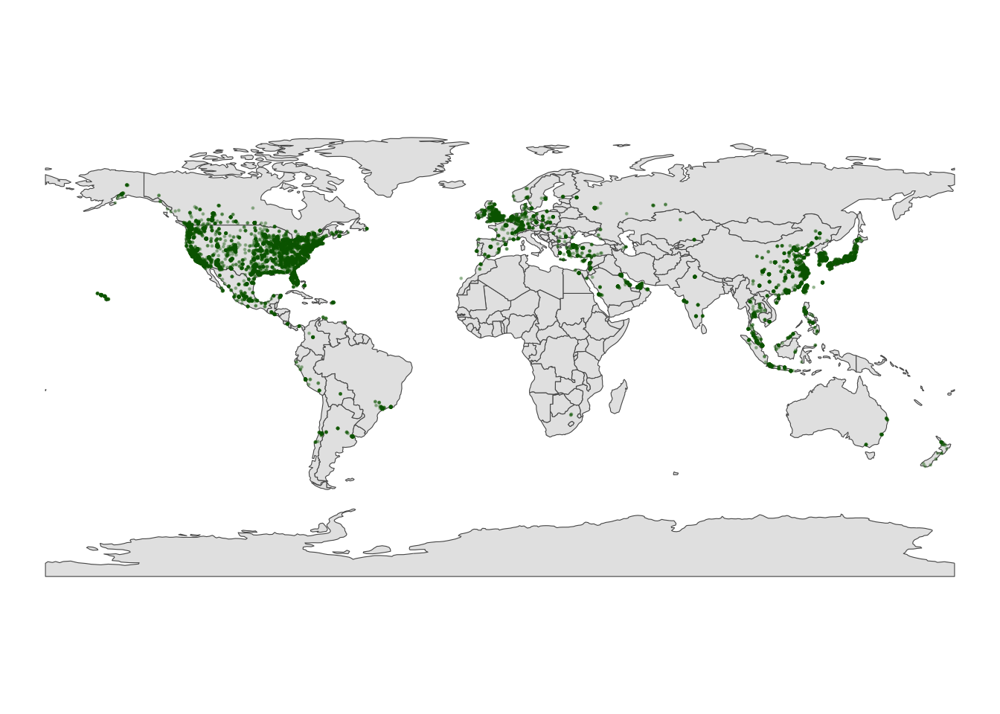

── Conflicts ────────────────────────────────────────── tidyverse_conflicts() ──
✖ dplyr::filter() masks stats::filter()
✖ dplyr::lag() masks stats::lag()
ℹ Use the conflicted package (<http://conflicted.r-lib.org/>) to force all conflicts to become errors
#library("rnaturalearthhires")library("maps")
Attaching package: 'maps'
The following object is masked from 'package:purrr':
map
library("sf")
Linking to GEOS 3.11.0, GDAL 3.5.3, PROJ 9.1.0; sf_use_s2() is TRUE
library("RColorBrewer")library("devtools")
Loading required package: usethis
##Exercise 1: A leaflet with markers / points
fave_places <-read.csv("https://hash-mac.github.io/stat112site-s25/data/our_fave_places.csv")# Check it outhead(fave_places)
# Load the leaflet packagelibrary(leaflet)# Just a plotting frameleaflet(data = fave_places)
# Now what do we have?leaflet(data = fave_places) |>addTiles()
# Now what do we have?# longitude and latitude refer to the variables in our dataleaflet(data = fave_places) |>addTiles() |>addMarkers(lng =~longitude, lat =~latitude)
# Since we named them "longitude" and "latitude", the function# automatically recognizes these variables. No need to write them!leaflet(data = fave_places) |>addTiles() |>addMarkers()
##Exercise 2: Details
# Load package needed to change colorlibrary(gplots)# We can add colored circles instead of markers at each locationleaflet(data = fave_places) |>addTiles() |>addCircles(color =col2hex("red"))
# We can change the background# Mark locations with yellow dots# And connect the dots, in their order in the dataset, with green lines# (These green lines don't mean anything here, but would if this were somebody's travel path!)leaflet(data = fave_places) |>addProviderTiles("USGS") |>addCircles(weight =10, opacity =1, color =col2hex("yellow")) |>addPolylines(lng =~longitude,lat =~latitude,color =col2hex("green") )
Assuming "Longitude" and "Latitude" are longitude and latitude, respectively
9.1 Exercise 3: Let’s start with the ggplot() tools we already know. Construct a scatterplot of all starbucks locations, not just those in Minnesota, with:
Latitude and Longitude coordinates (which goes on the y-axis?!) Make the points transparent (alpha = 0.2) and smaller (size = 0.2)
ggplot(starbucks_mn, aes(y = Latitude, x = Longitude)) +geom_point(alpha=0.2, size =0.2)
##Exercise 4: Exercise 4: Adding a country-level background. #Part a
# Load the packagelibrary(rnaturalearth)# Get info about country boundaries across the world# in a "sf" or simple feature formatworld_boundaries <-ne_countries(returnclass ="sf")
#Part b
# What does this code produce?#This code produces a world map# What geom are we using for the point map?ggplot(world_boundaries) +geom_sf()
#We are using geom simple feature
# Load package needed to change map themelibrary(mosaic)
Registered S3 method overwritten by 'mosaic':
method from
fortify.SpatialPolygonsDataFrame ggplot2
The 'mosaic' package masks several functions from core packages in order to add
additional features. The original behavior of these functions should not be affected by this.
Attaching package: 'mosaic'
The following object is masked from 'package:Matrix':
mean
The following objects are masked from 'package:dplyr':
count, do, tally
The following object is masked from 'package:purrr':
cross
The following object is masked from 'package:ggplot2':
stat
The following objects are masked from 'package:stats':
binom.test, cor, cor.test, cov, fivenum, IQR, median, prop.test,
quantile, sd, t.test, var
The following objects are masked from 'package:base':
max, mean, min, prod, range, sample, sum
# Add a point for each Starbucks# NOTE: The Starbucks info is in our starbucks data, not world_boundaries# How does this change how we use geom_point?!ggplot(world_boundaries) +geom_sf() +geom_point(data = starbucks,aes(x = Longitude, y = Latitude),alpha =0.3, size =0.2, color ="darkgreen" ) +theme_map()
Warning: Removed 1 row containing missing values or values outside the scale range
(`geom_point()`).

#Part c: Summarize what you learned about Starbucks from this map – *I learned that Starbucks are concentrated in the northern hemisphere of the continent, with a few expception in Asia and Oceania.
##Exercise 5: Zooming in on some countries #Part a
# We'll learn this syntax soon! Don't worry about it now.starbucks_cma <- starbucks |>filter(Country %in%c('CA', 'MX', 'US'))
cma_boundaries <-ne_states(country =c("canada", "mexico", "united states of america"),returnclass ="sf")
# Just the boundariesggplot(cma_boundaries) +geom_sf()
# Add the points# And zoom inggplot(cma_boundaries) +geom_sf() +geom_point(data = starbucks_cma,aes(x = Longitude, y = Latitude),alpha =0.3,size =0.2,color ="darkgreen" ) +coord_sf(xlim =c(-179.14, -50)) +theme_map()
##Exercise 6: A state and county-level map #Part a
# Load packageslibrary(sf)library(maps)# Get the boundariesmidwest_boundaries <-st_as_sf( maps::map("county",region =c("minnesota", "wisconsin", "north dakota", "south dakota"), fill =TRUE, plot =FALSE))# Check it outhead(midwest_boundaries)
Simple feature collection with 6 features and 1 field
Geometry type: MULTIPOLYGON
Dimension: XY
Bounding box: xmin: -96.81268 ymin: 45.05167 xmax: -93.01397 ymax: 48.53526
Geodetic CRS: +proj=longlat +ellps=clrk66 +no_defs +type=crs
ID geom
minnesota,aitkin minnesota,aitkin MULTIPOLYGON (((-93.03689 4...
minnesota,anoka minnesota,anoka MULTIPOLYGON (((-93.51817 4...
minnesota,becker minnesota,becker MULTIPOLYGON (((-95.14537 4...
minnesota,beltrami minnesota,beltrami MULTIPOLYGON (((-95.58655 4...
minnesota,benton minnesota,benton MULTIPOLYGON (((-93.77027 4...
minnesota,big stone minnesota,big stone MULTIPOLYGON (((-96.10794 4...
Source Code
---title: "Spatial Viz"---Use this file for practice with the **spatial viz** in-class activity. Refer to the class website for details.```{r}library("leaflet")library("gplots")library("tidyverse")#library("rnaturalearthhires")library("maps")library("sf")library("RColorBrewer")library("devtools")```##Exercise 1: A leaflet with markers / points```{r}fave_places <-read.csv("https://hash-mac.github.io/stat112site-s25/data/our_fave_places.csv")# Check it outhead(fave_places)```#Part a```{r}# Load the leaflet packagelibrary(leaflet)# Just a plotting frameleaflet(data = fave_places)``````{r}# Now what do we have?leaflet(data = fave_places) |>addTiles()``````{r}# Now what do we have?# longitude and latitude refer to the variables in our dataleaflet(data = fave_places) |>addTiles() |>addMarkers(lng =~longitude, lat =~latitude)``````{r}# Since we named them "longitude" and "latitude", the function# automatically recognizes these variables. No need to write them!leaflet(data = fave_places) |>addTiles() |>addMarkers()```##Exercise 2: Details```{r}# Load package needed to change colorlibrary(gplots)# We can add colored circles instead of markers at each locationleaflet(data = fave_places) |>addTiles() |>addCircles(color =col2hex("red"))``````{r}# We can change the background# Mark locations with yellow dots# And connect the dots, in their order in the dataset, with green lines# (These green lines don't mean anything here, but would if this were somebody's travel path!)leaflet(data = fave_places) |>addProviderTiles("USGS") |>addCircles(weight =10, opacity =1, color =col2hex("yellow")) |>addPolylines(lng =~longitude,lat =~latitude,color =col2hex("green") )```##Exercise 3```{r}# Import starbucks location datastarbucks <-read.csv("https://mac-stat.github.io/data/starbucks.csv")``````{r}# Don't worry about the syntaxstarbucks_mn <- starbucks |>filter(Country =="US", State.Province =="MN")```#Create a leaflet map of the Starbucks locations in Minnesota. Keep it simple – go back to Exercise 1 for an example.```{r}leaflet(data = starbucks_mn) |>addTiles() |>addMarkers()```## Exercise 3: Let’s start with the ggplot() tools we already know. Construct a scatterplot of all starbucks locations, not just those in Minnesota, with: *Latitude and Longitude coordinates (which goes on the y-axis?!) *Make the points transparent (alpha = 0.2) and smaller (size = 0.2)```{r}ggplot(starbucks_mn, aes(y = Latitude, x = Longitude)) +geom_point(alpha=0.2, size =0.2)```##Exercise 4: Exercise 4: Adding a country-level background. #Part a```{r}# Load the packagelibrary(rnaturalearth)# Get info about country boundaries across the world# in a "sf" or simple feature formatworld_boundaries <-ne_countries(returnclass ="sf")```#Part b```{r}# What does this code produce?#This code produces a world map# What geom are we using for the point map?ggplot(world_boundaries) +geom_sf()#We are using geom simple feature``````{r}# Load package needed to change map themelibrary(mosaic)# Add a point for each Starbucks# NOTE: The Starbucks info is in our starbucks data, not world_boundaries# How does this change how we use geom_point?!ggplot(world_boundaries) +geom_sf() +geom_point(data = starbucks,aes(x = Longitude, y = Latitude),alpha =0.3, size =0.2, color ="darkgreen" ) +theme_map()```#Part c: Summarize what you learned about Starbucks from this map --*I learned that Starbucks are concentrated in the northern hemisphere of the continent, with a few expception in Asia and Oceania. ##Exercise 5: Zooming in on some countries#Part a```{r}# We'll learn this syntax soon! Don't worry about it now.starbucks_cma <- starbucks |>filter(Country %in%c('CA', 'MX', 'US'))``````{r}cma_boundaries <-ne_states(country =c("canada", "mexico", "united states of america"),returnclass ="sf")``````{r}# Just the boundariesggplot(cma_boundaries) +geom_sf()``````{r}# Add the points# And zoom inggplot(cma_boundaries) +geom_sf() +geom_point(data = starbucks_cma,aes(x = Longitude, y = Latitude),alpha =0.3,size =0.2,color ="darkgreen" ) +coord_sf(xlim =c(-179.14, -50)) +theme_map()```##Exercise 6: A state and county-level map#Part a```{r}starbucks_midwest <- starbucks |>filter(State.Province %in%c("MN", "ND", "SD", "WI"))``````{r}# Load packageslibrary(sf)library(maps)# Get the boundariesmidwest_boundaries <-st_as_sf( maps::map("county",region =c("minnesota", "wisconsin", "north dakota", "south dakota"), fill =TRUE, plot =FALSE))# Check it outhead(midwest_boundaries)```